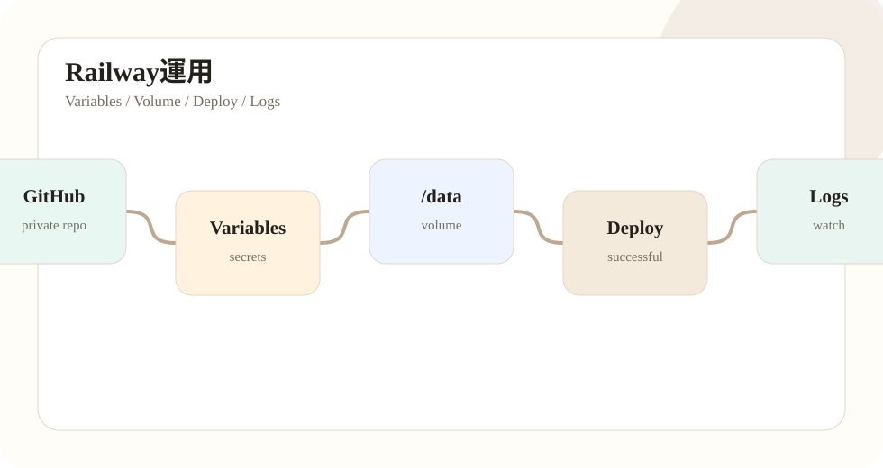

第06回：GitHubとRailwayで本番稼働させる
ローカルで動いたPluginをRailwayへ移します。GitHub Private repoをRailwayに接続し、Variablesを設定し、Volumeを/dataにマウントします。
Railway Variablesには、ローカル.envと同等の値を設定します。ただし、APIキーやClient Secretは公開資料に貼らず、Railway画面へ直接入力します。
状態ファイルは/data配下に置きます。返信済みID、投稿履歴、ユーザー呼称、静寂投稿履歴などが再デプロイで消えないようにするためです。
注意すべき事故は、Secretの空欄上書きです。MIXI2_CLIENT_SECRETやOPENAI_API_KEYを空欄のまま貼ると、実値が消えます。テンプレでは実値を書かず、Railwayで設定済みかだけを確認します。

確認ポイント
- この段階で何を確認すべきかを明確にする。
- 秘密値や実ログを公開記事に含めない。
- 問題が起きた場合は、前段階へ戻って切り分ける。
- 作業後は必ずGit status、ビルド、対象ページ表示を確認する。
Railwayで見るログ
RailwayのDeploy successfulは入口であり、完成判定ではありません。デプロイ後はログを見て、missing env、OpenAI key missing、mixi2 token error、PermissionDenied、panicが出ていないか確認します。
EVENT_LOG_PATH=/data/logs/events.jsonl
POST_LOG_PATH=/data/logs/posts.jsonl
REPLIED_LOG_PATH=/data/logs/replied_post_ids.txtVolumeがない状態で/dataを指定している場合、保存に失敗するか、再起動で履歴が消えます。各serviceでVolume表示を確認します。
実作業の分解
Railwayでは、コード、Variables、Volume、ログの4つを分けて確認します。コードをpushしてもVariablesは変わりません。Variablesを直してもVolumeは付きません。Deploy successfulでもログにエラーが出ている可能性があります。
特にSecretは、空欄テンプレで上書きしないことが重要です。OPENAI_API_KEYやMIXI2_CLIENT_SECRETはRailway画面で直接設定し、記事やテンプレでは実値を書かないようにします。
この段階で大事なのは、作業結果を「動いた」「動かない」だけで判断しないことです。どの入力に対して、どの設定を読み、どの外部サービスへ接続し、どのログへ残るのかを確認します。BOTは一度動くと自動で投稿・返信するため、目に見える成功よりも、誤作動しないための確認が重要です。
また、ローカルで成功した作業とRailwayで成功した作業は分けて扱います。ローカルでは.envを読みますが、本番ではRailway Variablesを読みます。ローカルではファイルが残っていても、本番ではVolumeがなければ再デプロイで状態が消える可能性があります。この差を毎回意識します。
作業後は、Gitの差分、ビルド結果、確認コマンド、必要ならブラウザ表示を確認します。特に公開ノート側では、HTMLのリンク切れ、スマホでの横はみ出し、モック画像の表示、詳細記事の前後ナビを確認します。